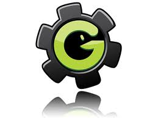
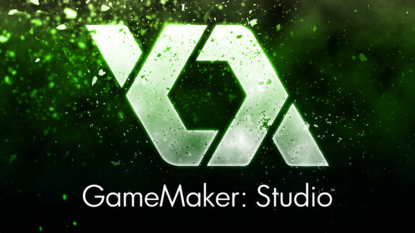

История версий

1999-первая версия
Летом 1999 начата работа над Game Maker (первоначально он назывался Animo, потому что сперва была идея сделать простую систему для создания двухмерной анимации). Первой публичной реализацией стала версия 1.1 (15 ноября, 1999). Эта версия уже имела упрощённый встроенный язык программирования, но не использовался DirectX и не позволяла создавать автономные выполнимые программы — игры просто запускались в основном окне программы. Достаточно быстро были созданы версии 1.2, 1.2a, 1.3. Программа оставалась мало известной, в декабре 1999 Game Maker был скачан всего 366 раз.2000 год
Версия 1.4 стала первой реализацией, обратившей на себя внимание. Программу стали чаще скачивать: (1000 в феврале 2000 года, 1500 в марте 2000 года, 2000 в июне 2000 года, 8000 в августе 2000 года). Версия 2.0 увидела свет в сентябре 2000 года. За весь 2000 год программа была скачана с сайта автора приблизительно 40.000 раз.2001
В версии 3.0, впервые для вывода графики был использован DirectX. Популярность игрового движка быстро росла. В марте 2001 года, программу скачали приблизительно 14.000 раз, а уже в июне 2001 количество скачиваний увеличилось до 21.000. В том же году вышли дополнительные версии 3.1, 3.2 и 3.3. В январе 2001 была переписана с нуля, с учётом знаний, приобретенных автором за предыдущие годы. Был полностью изменен интерфейс программы, новая реализация не была совместима со старой версией. Версия 4.0 была выпущена в июле 2001. Версия 4.1 появилась в декабре 2001 (добавлена поддержка мультиплеера). В декабре 2001 было зафиксировано 32.000 скачивания. За весь 2001 программа была загружена приблизительно 270.000 раз.2002
Версия 4.2 увидела свет в апреле 2002. Основная особенность — многократно увеличена стабильность работы. Версия 4.3 появилась в ноябре 2002. Популярность программы больше, чем когда-либо. В настоящее время программу скачивают приблизительно 2.000 раз каждый день. Число просмотров основной авторской страницы возросло с 2000 в Октябре 2000 года до 70.000 в Октябре 2002 года.2003
Начиная с января 2003 года автор просил пожертвования, потому что затраты для того, чтобы развивать Game Maker и поддерживать сообщество увеличиваются все время. Game Maker теперь имеет собственный домен:www.gamemaker.nl. В апреле появилась версия 5.0. В неё включён добровольный механизм регистрации, но программа может все ещё использоваться бесплатно.В конце августа Game Maker был показан на TechTV, что вызвало чрезмерную нагрузку на сайт проекта, программу одновременно пытались загрузить 5000 человек. В сентябре вышла версия 5.1, расширенная, в частности поддержкой систем частиц и возможность заменять ресурсы «на лету». Часть расширенных возможностей стала недоступна для незарегистрированных пользователей. Появился новый (платный) форум.
В декабре появилась версия 5.2 с улучшенным редактором комнат и дополнительными действиями для частиц. Появились функции, для работы со структурами данных. За весь 2003 программа была загружена приблизительно 1.700.000 раз (приблизительно 5.000 в день). Программа используется в школьном курсе информатики во многих странах мира.
2004
В апреле появилась версия 5.3 с улучшенным редактором пути и планированием движений. Справочный файл теперь имеет формат HTML-справки (.CHM). С апреля началась работа над версией 6.0, в которой графическая подсистема переписана с использованием Direct3D. Это значительно улучшило качество и возможности графики (быстрая и простая поддержка альфа-прозрачности, перекрашивание спрайтов «на лету» и т. д.). В новую версию включен набор функций для 3D графики. Был переписан и звуковой движок. Также переписана система регистрации и добавлено дополнительное кодирование. Версия 6.0 появилась в октябре 2004. Вследствие популярности Game Maker форум был перегружен, и его стало невозможно использовать. В ноябре 2004 форум был перемещен на новый сервер. За 2004 количество загрузок Game Maker составило приблизительно 1 600 000. Почти столько же, сколько и в предыдущем году. Сайт автора посещается приблизительно 10 000 раз в день.2005
В мае 2005 появилась версия Game Maker 6.0 с улучшенным редактором изображений, простым механизмом взрывов и эффектов, отрисовкой поверхностей и множества мелких изменений и исправлений ошибок.В июле 2005 Game Maker был показан на G4TV. В течение дня число просмотров сайта и загрузок программы утроилось (приблизительно 26.000 просмотров в день).
В августе 2005 число просмотров страниц сайта Game Maker достигло 10.000.000 (с октября 2000). Постоянное число просмотров страниц в день равно 11.000. Также в августе игра, созданная на Game Maker, названная Duch Doom, была показана на G4TV. Они упомянули форум, что почти привело к его обрушению. В один момент было более чем 800 одновременных посетителей. 
2006
Марк Овермарс вместе с Джекобом Хабгудом пишут книгу — The Game Maker’s Apprentice: Game Development for Beginners изданную APress в конце июня 2006. В марте 2006 сайт GameMaker перенесён на более быстрый сервер. Число просмотров страниц — теперь приблизительно 25.000 в день, около 200.000 уникальных посетителей в месяц. Сайт использует приблизительно 600 Гбайт пропускной способности в месяц. Загрузки остаются постоянными в пределах 4.000 в день. Начиная с лета проводилась работа над версией 7.0. Главное усовершенствование — механизм расширения, который облегчит добавление дополнительных функциональных возможностей. beta появилась в начале ноября.2007
28 февраля была выпущена версия Game Maker 7.0 через новый сайт YoYo Games.В мае 2007 www.gamemaker.nl — официальный сайт Game Maker прекращает свое существование. Теперь официальное представительство Game Maker — www.yoyogames.com.
Через полгода с момента создания yoyogames.com насчитывает более 5.000 игр, загружаемых, в среднем, по 50 в день. Просматриваются приблизительно 200.000 страниц в день. Game Maker скачивают по 3.000 раз в день. На форуме зарегистрировано около 40.000 участников, в любой момент на форуме присутствует 200—250 участников, создано 1.500 тем.
В конце года было проведено первое соревнование (YoYoGames competition 01), тематикой которого стала «зима». Обладателем главного приза ($1.000) стал разработчик 2dCube.
2008
Март. YoYo Games празднует «юбилей» — 100.000 зарегистрированных пользователей. Проведено два следующих соревнования: YoYoGames competition 02 и, соответственно, YoYoGames competition 03.2009
Весной YoYo Games объявила о разработке версии 8.0. Вначале для открытого бета-тестирования отдельно от программы было выпущено приложение для разработки спрайтов, а 3 июля опубликована бета-версия самого конструктора.22 декабря 2009 года вышел окончательный Game Maker 8.0. Главные нововведения новой версии — это обновленный интерфейс с панелью обучения сбоку, расширенный список функций и графический редактор с отдельно настроенным альфа-цветом (раньше для придания спрайту невидимых деталей для изменения его формы нужно было настраивать невидимым один из цветов), а также исправление ошибок предыдущей версии (к примеру, исправлена возможность проходимости предметов сквозь друг друга на большой скорости).
2011
Вышла версия 8.1, содержащая большой список исправлений и добавлений. Сделан переход на юникод, ускорены функции 3d, улучшен редактор комнат, увеличена скорость работы редактора кода, добавлены новые функции. Также вышла версия GameMaker:HTML5. Эта версия позволяет создавать приложения как под Windows, так и приложения, запускаемые в браузерах. Для html5 генерируется JavaScript-код, что позволяет использовать приложения на любом, поддерживающем html5 браузере, без использования дополнительных плагинов.2012
24 мая вышел Game Maker Studio, позволяющий разрабатывать приложения также для Mac OSX, Android, iOS, Windows Phone 8, Windows 8. Доступна только на Windows.2 октября программа стала доступна в продаже на платформе Steam.
2013
Запланированный релиз Game Maker 9 так и не удался. Однако активно развивается Game Maker Studio, о чём свидетельствуют множественные обновления и дополнения. Более подробно об этом можно посмотреть на сайте YoYo Games в разделе Game Maker Studio: www.yoyogames.com/gamemaker/studio Кстати говоря, в Game Maker Studio в отличие от предыдущих версий не интерпретатор, вследствие чего он несколько ограничен в выполнении кода "на лету", но скорость работы программ возросла. В марте вышел модуль экспорта в Ubuntu Software Center для Game Maker Studio. 2014
6 июня Game Maker Studio: Standard стал совершенно бесплатен. При этом для новых пользователей Standard версии был изъят экспорт на Mac OS и при запуске игр будет появляться водяной знак YoYo Games. Для оплаченной Standard версии такие ограничения не действуют2015
YoYo Games была приобретена компанией Playtech. Причиной этому, по комментариям представителей самой YoYo Games, послужило то, что Game Maker: Studio не принес достаточно прибыли, дабы у компании были средства на его дальнейшее развитие. Однако не стоит думать, что YoYo Games просто пытается обзавестись легкими деньгами: опять же, по словам представителей компании, их первостепенной целью всегда было предоставить как начинающим, так и продвинутым девелоперам удобный и простой конструктор для разработки игр. Подкрепляют свои слова YoYo Games тем, что решение о выпуске бесплатной версии Game Maker: Studio Standard было принято далеко не только в маркетинговых целях.На данный момент YoYo Games получила достаточное количество денег от инвестора (Playtech) и планирует выпустить Game Maker: Studio 2.0 в рекордно короткий срок. Предположительно релиз новой версии популярного конструктора состоится ближе к концу года.